Guia TIM Tec Professor
Como acessar a área de administração
Qualquer edição dentro da plataforma TIM Tec é realizada dentro da área de administração.
Após efetuar seu login, clique no botão ADMINISTRAÇÃO e em seguida escolha a opção desejada. 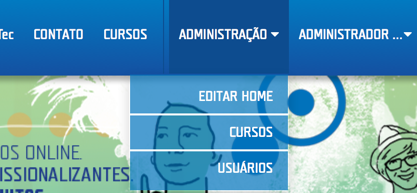
Como editar um curso
Sempre é possível editar os conteúdos dos cursos em que você é instrutor. Para isso:
- Após efetuar seu login, acesse a área da ADMINISTRAÇÃO e clique na opção CURSOS.
- Entre no curso que deseja editar.
- Clique sobre o(s) campo(s) que deseja editar e realize as mudanças desejadas. Para mais detalhes sobre cada campo clique aqui.
- Clique no botão SALVAR.
- Clique no botão PUBLICAR caso queira deixar as mudanças visíveis aos alunos.
Como apagar um curso
Para apagar um curso, realize os seguintes passos:
- Após efetuar seu login, acesse a área da ADMINISTRAÇÃO.
- Entre no curso que deseja apagar.
- Clique no botão APAGAR ESTE CURSO.
- Confirme no aviso que você deseja apagar o curso e pronto, todo o conteúdo contido nele foi removidos da plataforma TIM Tec.
Como alterar o vídeo ou a imagem da página inicial de seu curso
Você pode a qualquer momento alterar o vídeo ou a imagem da página inicial do curso. Para isso:
- Após efetuar seu login, acesse a área da ADMINISTRAÇÃO.
- Entre no curso que deseja alterar.
- Para alterar o vídeo: clique em TROCAR VÍDEO, apague o ID do vídeo atual do campo Vídeo introdutório, insira o novo ID e clique em ADICIONAR. Para alterar a imagem (thumbnail): clique em TROCAR THUMBNAIL, busque a imagem através do botão Choose File e clique em ADICIONAR.
- Clique no botão SALVAR.
- Clique no botão PUBLICAR caso queira deixar as mudanças visíveis aos alunos.
O ID é a parte final do vídeo que o identifica, por exemplo, no link https://www.youtube.com/watch?v=mIvLsglRZdQ o ID é mIvLsglRZdQ.
Descrição dos campos da página inicial do curso
Veja a seguir a descrição de cada um dos campos da página inicial do curso. Para editá-los, basta clicar sobre eles.
- Nome do curso: é o título do curso. Veja que abaixo deste campo é exibido o link direto para o curso. Este link é gerado automaticamente pela plataforma.
- Vídeo ou Thumbnail: aqui você escolhe se a página inicial do curso terá um vídeo de apresentação ou uma imagem. Caso for um vídeo, clique no botão VIDEO, insira o ID do link do YouTube e clique em ADICIONAR. O ID é a parte final do vídeo que o identifica, por exemplo, no link https://www.youtube.com/watch?v=mIvLsglRZdQ o ID é mIvLsglRZdQ. Caso for uma imagem, clique em THUMBNAIL, escolha o arquivo da imagem e clique em Adicionar.
- Resumo: resumo apresentando o curso. Nossa sugestão é que sejam usadas palavras-chave indicando sobre o que trata o curso.
- ADICIONAR INSTRUTOR: instrutor responsável pelo curso.
- Por que fazer esse curso?: descrição de quais são as aplicações dos conhecimentos adquiridos após a conclusão do curso, nos contextos profissional e social do aluno. Nossa sugestão é que o campo responda as seguintes perguntas: o que posso estudar agora? O que consigo fazer agora? Em que posso trabalhar agora?
-
O que eu preciso saber?: nossa sugestão é que o conteúdo
deste campo descreva dois tipos de requisitos:
- Quais os conhecimentos prévios necessários para realizar este curso.
- Quais os requisitos de infraestrutura para realizar este curso.
- Estrutura: campo para explicar a metodologia do curso, como serão oferecidas as aulas, quais os tipos de atividade, avaliação, enfim, quais os recursos de aprendizagens disponíveis.
- Aulas: este campo contém o principal conteúdo do curso. Aqui, são inseridas as videoaulas e os vídeos. Para mais detalhes sobre o conteúdo das aulas clique aqui.
Diferenças entre Professor Assistente e Professor Coordenador
Existem dois papéis possíveis para professores na plataforma:
- PROFESSOR ASSISTENTE: O PROFESSOR ASSISTENTE possui permissões de moderação apenas nas turmas específicas às quais está associado.
- PROFESSOR COORDENADOR: O PROFESSOR COORDENADOR possui a permissão de editar o conteúdo e as configurações dos cursos nos quais está associado. Além disso, consegue, assim como o PROFESSOR ASSISTENTE, enviar mensagens, ver os relatórios e moderar os fóruns, porém não só de turmas específicas, mas de todas as turmas dos cursos em que está associado.
Como acessar os seus cursos como Professor Assistente e Coordenador
Acesse os seus cursos clicando no seu nome de usuário na barra superior e em seguida em MEUS CURSOS.
Na página MEUS CURSOS, você tem acesso a todos os cursos em que está inscrito como estudante e nos que está associado como Professor Assistente e Coordenador.
Para acessar a lista de cursos em que está inscrito como Professor Assistente, acesse a aba CURSOS EM QUE SOU ASSISTENTE e para acessar os cursos em que é Professor Coordenador, acesse a aba CURSOS EM QUE SOU COORDENADOR, como na imagem abaixo:
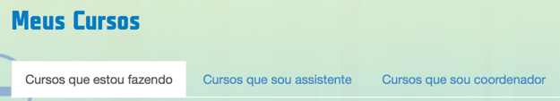Como adicionar uma aula
As aulas são responsáveis por grande parte conteúdo do curso. Elas são constituídas por unidades sendo que cada unidade contém um vídeo obrigatoriamente e pode conter quantas atividades você desejar.
Para adicionar uma aula, realize os seguintes passos:
- Após efetuar seu login, acesse a área da ADMINISTRAÇÃO.
- Entre no curso que deseja adicionar uma ou mais aulas.
-
Clique em ADICIONAR AULA. A página de edição da aula abrirá.
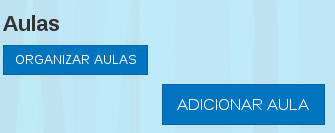
- Defina um nome para essa aula no campo Nome da aula. Nossa sugestão é que seja objetiva e de fácil entendimento.
- Insira a descrição de sua aula no campo abaixo do Nome da aula. Esta descrição será exibida abaixo do nome da aula, na página inicial do curso.
-
Adicione quantas unidades desejar clicando na barra à esquerda com o
símbolo "+". Para cada unidade, você tem duas opções:
- A inserção de um vídeo, sendo que isso é obrigatório ter ao menos um por unidade.
- A inserção de atividades, ficando a critério do instrutor a quantidade desejada. Veja os tipos de atividade clicando aqui.
- Clique em ADICIONAR para cada vídeo ou atividade adicionado.
- Preencha o campo Materiais adicionais com informações úteis ao aluno relacionadas a cada unidade. Como sugestão, você pode inserir dicas sobre as atividades ou conteúdo extra sobre a unidade.
- Clique no botão SALVAR.
- Clique no botão PUBLICAR AULA caso queira deixar as mudanças visíveis aos alunos.
Segue uma imagem com a indicação de cada campo:
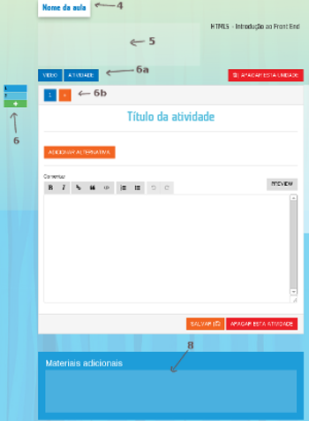Como editar uma aula
Você pode alterar qualquer conteúdo das aulas, desde seu título ou descrição, até suas atividades e vídeo.
Para isso, realize os seguintes passos:
- Após efetuar seu login, acesse a área da ADMINISTRAÇÃO.
- Acesse o curso que contém a aula.
- Clique sobre o campo que deseja alterar e realize as modificações.
- Clique no botão SALVAR.
- Clique no botão PUBLICAR AULA caso queira deixar as mudanças visíveis aos alunos.
Como apagar uma aula
Você pode apagar qualquer aula dentro de um curso. Para isso:
- Após efetuar seu login, acesse a área da ADMINISTRAÇÃO.
- Acesse o curso que contém a aula.
- Entre na aula que deseja apagar.
- Clique no botão APAGAR ESTA AULA.
- Clique em OK na caixa de confirmação que aparecerá.
Pronto! A aula e todo o conteúdo contido nela (vídeo e atividades) foram removidos do curso e da plataforma TIM Tec.
Como adicionar vídeos nas aulas
Um aula pode possuir várias unidades e cada unidade deve possuir um vídeo obrigatoriamente.
Para adicionar o vídeo:
- Após efetuar seu login, acesse a área da ADMINISTRAÇÃO.
- Acesse o curso que contém a aula e aula em que deseja inserir o vídeo.
- Clique na unidade (barra vertical à esquerda) em que deseja inserir o vídeo. Veja que para adicionar unidades basta clicar no símbolo "+" da barra vertical de unidades.
- Insira o ID do vídeo do YouTube no campo Vídeo da unidade e clique no botão ADICIONAR. O ID é a parte final do vídeo que o identifica, por exemplo, no link https://www.youtube.com/watch?v=mIvLsglRZdQ o ID é mIvLsglRZdQ.
- Clique no botão SALVAR.
- Clique no botão PUBLICAR AULA caso queira deixar as mudanças visíveis aos alunos.
Como alterar o vídeo de uma aula
Para alterar um ou mais vídeo nas aulas, realize os seguintes passos:
- Após efetuar seu login, acesse a área da ADMINISTRAÇÃO.
- Acesse o curso que contém a aula e a unidade em que deseja alterar o vídeo.
- Clique no botão TROCAR VÍDEO e insira o ID do vídeo do YouTube no campo Vídeo da unidade. O ID é a parte final do vídeo que o identifica, por exemplo, no link https://www.youtube.com/watch?v=mIvLsglRZdQ o ID é mIvLsglRZdQ.
- Clique no botão SALVAR.
- Clique no botão PUBLICAR AULA caso queira deixar as mudanças visíveis aos alunos.
Como organizar as aulas
Você pode organizar as aulas alterando o status de cada uma. Para isso:
- Após efetuar seu login, acesse a área da ADMINISTRAÇÃO.
- Acesse o curso que você deseja organizar as aulas.
-
Clique no botão ORGANIZAR AULAS e as aulas serão listadas da seguinte forma:
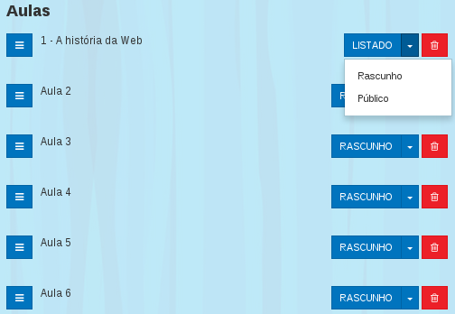
-
Altere o status da aula ou apague as que desejar clicando no ícone da lixeira.
Veja que há três status:
- Rascunho: quando apenas você consegue visualizar a aula.
- Listado: quando a aula está disponível na plataforma para visualização de instrutores e administador.
- Público: quando a aula está disponível para o público.
- Clique em SALVAR para finalizar.
Onde eu verifico as dúvidas?
Há dois caminhos na plataforma TIM Tec para verificar as dúvidas inseridas pelos alunos:
- Em toda tela de aula há o Fórum, em que você pode verificar as dúvidas inseridas para aquele contexto. Há um filtro para você escolher se gostaria de ver por ordem das mais recentes, das mais votadas ou das mais respondidas. Para responder, é necessário clicar na pergunta e ser direcionado à página do Fórum.
- Na tela das aulas, há o ícone do fórum disponível na área direita da página. Através dali, você acessa o fórum referente ao curso e uma lista consolidada de tudo o que já foi inserido nele.
Veja que há setinhas e uma numeração tanto no título do tópico inserido quanto nas respostas. Isso representa a votação dada àquele item pelos próprios alunos e por você (se quiser).
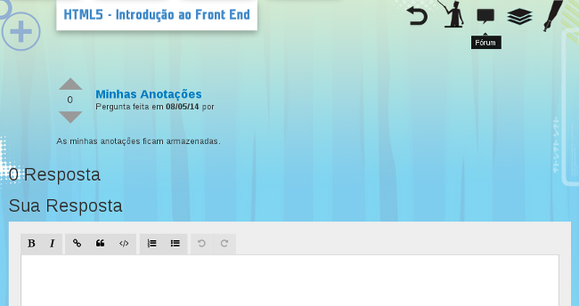
Como adicionar uma atividade
Dentro de cada unidade da lição, após ter inserido o vídeo, você pode inserir quantas atividades desejar. Veja a seguir como inserir as atividades e quais são os tipos disponíveis na plataforma TIM Tec:
- Após efetuar seu login, acesse a área da ADMINISTRAÇÃO.
- Acesse o curso e a aula em que deseja adicionar atividade.
- Clique na unidade escolhida na barra vertical à esquerda.
- Clique no botão ATIVIDADE.
- Para a primeira atividade, escolha um dos tipos de atividade disponível. Para adicionar mais atividades na mesma aula, clique no + do menu horizontal. Veja uma breve descrição de cada tipo de atividade aqui.
- Clique no botão ADICIONAR.
- Preencha os campos necessários da atividade. Veja mais sobre como preencher cada atividade aqui.
- Clique no botão SALVAR.
- Clique no botão PUBLICAR AULA caso queira deixar as mudanças visíveis aos alunos.
Como editar uma atividade
Você pode editar os campos de qualquer atividade inserida. Para isso:
- Após efetuar seu login, acesse a área da ADMINISTRAÇÃO.
- Acesse o curso e a aula em que deseja editar a atividade.
- Clique na unidade (barra vertical à esquerda) que contém a atividade.
- No menu numeŕico horizontal, clique no número referente à atividade que deseja alterar.
- Clique no(s) campo(s) que deseja modificar e realize suas alterações.
- Clique no botão SALVAR.
- Clique no botão PUBLICAR AULA caso queira deixar as mudanças visíveis aos alunos.
Como apagar uma atividade
Você pode apagar qualquer atividade inserida, sem alterar o resto da unidade em que ela se encontra. Para isso:
- Após efetuar seu login, acesse a área da ADMINISTRAÇÃO.
- Acesse o curso e a aula em que deseja editar a atividade.
- Clique na unidade (barra vertical à esquerda) que contém a atividade.
- Escolha no menu numérico qual a atividade a ser removida.
- Clique no botão APAGAR ESTA ATIVIDADE.
Pronto! A atividade foi removida do curso e da plataforma TIM Tec. Fique atento ao remover uma atividade, pois ela é removida automaticamente ao clicar no botão APAGAR ESTA ATIVIDADE, sem caixa de confirmação.
Descrição dos tipos de atividade
- Escolha simples: composta por um enunciado e alternativas, sendo apenas uma como escolha de resposta.
- Múltipla escolha: composta por um enunciado e alternativas, podendo ser mais de uma como escolha de resposta. Veja que aqui o aluno deverá marcar todas as alternativas que você escolher como corretas.
- Verdadeiro ou Falso: composta por enunciado e alternativas, sendo que para cada uma é necessário assinalar Verdadeiro ou Falso.
- Relacionar sentenças: composta por enunciado, coluna 1 com alternativas e coluna 2 com textos para relacionar a cada uma dessas alternativas.
- HTML5: composta por enunciado, campo de resultado esperado em editor HTML5 e editor HTML5 do aluno. A exibição para o aluno do resultado é sempre a renderização do código inserido por você.
- Texto simples: composta por enunciado e campo de resposta. Na visão do aluno, aparecerá um campo de texto em branco para resposta.
Para cada atividade, há um campo de comentário (Comentar) disponível para ser exibido após o aluno responder a atividade.
Como preencher cada tipo de atividade
Escolha simples
Esta atividade é composta por um enunciado e alternativas, sendo apenas uma como escolha de resposta. Para preenchê-la:
- Preencha o campo do título da atividade com o enunciado.
- Clique no botão ADICIONAR ALTERNATIVA para incluir quantas alternativas desejar.
- Selecione a alternativa que será a resposta.
- Se desejar, preencha o campo Comentar. O texto ali colocado será exibido ao aluno após ele realizar a atividade.
- Clique no botão SALVAR.
- Clique no botão PUBLICAR AULA caso queira deixar as mudanças visíveis aos alunos.
Múltipla escolha
Esta atividade é composta por um enunciado e alternativas, podendo ser mais de uma como escolha de resposta. Para preenchê-la:
- Preencha o campo do título da atividade com o enunciado.
- Clique no botão ADICIONAR ALTERNATIVA para incluir quantas alternativas desejar.
- Selecione uma ou mais alternativas para a resposta. Veja que o aluno terá de marcar todas no momento de resolvê-la.
- Se desejar, preencha o campo Comentar. O texto ali colocado será exibido ao aluno após ele realizar a atividade.
- Clique no botão SALVAR.
- Clique no botão PUBLICAR AULA caso queira deixar as mudanças visíveis aos alunos.
Verdadeiro ou falso
Esta atividade é composta por enunciado e alternativas com valores determinados de Verdadeiro ou Falso. Para preenchê-la:
- Preencha o campo do título da atividade com o enunciado.
- Clique no botão ADICIONAR ALTERNATIVA para incluir quantas alternativas desejar.
- Selecione a opção Verdadeiro ou Falso para cada uma das alternativas inseridas.
- Se desejar, preencha o campo Comentar. O texto ali colocado será exibido ao aluno após ele realizar a atividade.
- Clique no botão SALVAR.
- Clique no botão PUBLICAR AULA caso queira deixar as mudanças visíveis aos alunos.
Relacionar sentenças
Esta atividade é composta por enunciado, coluna 1 com alternativas e coluna 2 com textos para relacionar a cada uma dessas alternativas. Para preenchê-la:
- Preencha o campo do título da atividade com o enunciado.
- Clique no botão ADICIONAR ALTERNATIVA para incluir quantas alternativas desejar.
-
Preencha os textos da coluna 1 e da coluna 2, lembrando que:
- Para cada item na coluna 1 é preciso ter um correspondente na coluna 2.
- A ordem inserida nas alternativas seŕá a mesma exibida aos alunos. Assim, sugerimos já misturar a ordem dos textos da coluna 2.
- Insira a resposta das questões com a numeração que corresponda o texto da coluna 2 com o número da coluna 1.
- Se desejar, preencha o campo Comentar. O texto ali colocado será exibido ao aluno após ele realizar a atividade.
- Clique no botão SALVAR.
- Clique no botão PUBLICAR AULA caso queira deixar as mudanças visíveis aos alunos.
HTML5
Esta atividade é composta por enunciado, campo de resultado esperado em editor HTML5 e editor HTML5 para o aluno inserir sua resposta. Para preenchê-la:
- Preencha o campo do título da atividade com o enunciado.
-
Na aba Resultado esperado, insira o código HTML5 que será a
resposta da atividade. Seguem algumas considerações sobre este ponto:
- O resultado esperado será exibido ao aluno somente renderizado e não no editor HTML5.
- É possível você inclur código apenas dentro da tag >body<.
- Na aba Editor do aluno, você pode inserir códigos e conteúdos que ficarão visíveis ao alunos.
- Se desejar, preencha o campo Comentar. O texto ali colocado será exibido ao aluno após ele realizar a atividade.
- Clique no botão SALVAR.
- Clique no botão PUBLICAR AULA caso queira deixar as mudanças visíveis aos alunos.
Para esta atividade, não há correção automática do sistema, devendo o aluno comparar sua produção com o resultado esperado ali exibido (renderizado).
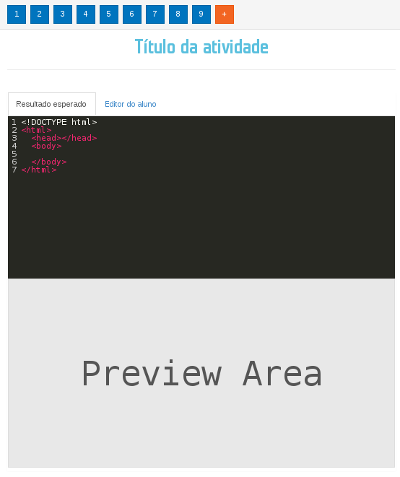Texto simples
Esta atividade é composta por enunciado e campo de resposta para o aluno. Para preenchê-la:
- Preencha o campo do título da atividade com o enunciado.
- Se desejar, preencha o campo Comentar. O texto ali colocado será exibido ao aluno após ele realizar a atividade.
- Clique no botão SALVAR.
- Clique no botão PUBLICAR AULA caso queira deixar as mudanças visíveis aos alunos.
Para esta atividade, não há correção automática do sistema. Sugerimos aqui você utilizar o campo Comentar para inserir um comentário sobre o que se espera como resposta.
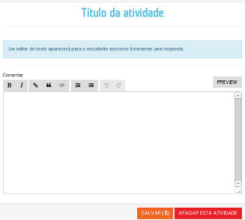Como adicionar uma unidade
Dentro de cada lição, você pode inserir quantas unidades desejar. As unidades contêm um vídeo e podem conter atividades.
Para adicionar uma unidade:
- Após efetuar seu login, acesse a área da ADMINISTRAÇÃO.
- Acesse o curso e a aula em que deseja adicionar uma unidade.
- A unidade 1 já vem por padrão em cada aula. Para adicionar a próxima, clique no símbolo + do menu vertical à esquerda.
- Adicione na unidade o vídeo (inserindo o ID do Vídeo do Youtube) e, se quiser, atividades.
- Clique no botão SALVAR.
- Clique no botão PUBLICAR AULA caso queira deixar as mudanças visíveis aos alunos.

Como apagar uma unidade
Você pode apagar qualquer unidade inserida. Lembre-se que apagando a unidade, você está apagando também o vídeo e as atividades contidas nela. Para apagar, realize os seguintes passos:
- Após efetuar seu login, acesse a área da ADMINISTRAÇÃO.
- Acesse o curso e a aula em que deseja remover uma unidade.
- Clique na unidade.
- Clique no botão APAGAR ESTA UNIDADE.
- Clique em OK na caixa de confirmação que aparecerá.
Pronto! A unidade foi removida de seu curso e da plataforma TIM Tec.
Como adicionar material didático
Para enriquecer o curso, você pode adicionar indicações de estudo e leitura no curso. Para isso:
- Após efetuar seu login, acesse a área da ADMINISTRAÇÃO.
- Acesse o curso em que deseja adicionar o material e uma lição qualquer.
-
Clique no ícone referente ao material didático localizado à direita
da página. Pronto, você está na página de material didática do curso.
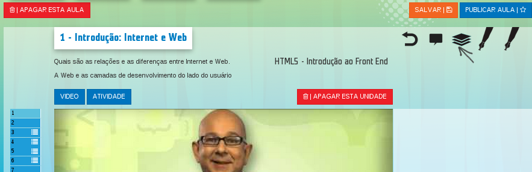
- Clique sobre a área abaixo do título Material didático e uma caixa de edição de texto será aberta.
-
Insira nela o conteúdo que desejar como material didático e em
seguida salve. Sempre que precisar editar, basta seguir o mesmo caminho.
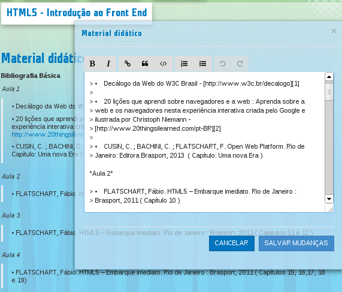
- Você pode inserir arquivos nesta página também. Basta clicar no botão (laranja) à direita da página e fazer o upload do arquivo.
- Volte à página do curso clicando no ícone de voltar ou no próprio título do curso.
- Clique no botão SALVAR.
- Clique no botão PUBLICAR AULA caso queira deixar as mudanças visíveis aos alunos.
Como acessar o menu de turmas de um curso
Os estudantes de cada curso podem ser agrupados e gerenciados por turmas, o número de turmas que podem ser criadas por curso é ilimitado.
Todo estudante faz parte de ao menos uma turma nos cursos em que está inscrito.
Por meio da separação de turmas, é possível executar ações com grupos de estudantes específicos, como, por exemplo, enviar mensagens e gerenciar relatórios. Para acessar o gerenciamento de turmas de curso, acesse o menu de FERRAMENTAS na página do curso (fora da área administrativa), como na imagem abaixo:
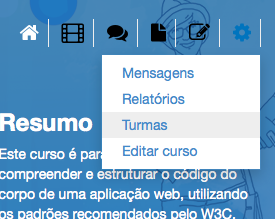
Como adicionar uma turma a um curso
Para adicionar uma nova turma a um curso, é necessário estar no menu de turmas do curso em questão ou através da página Meus Cursos nas abas de Professor Assistente e Professor Coordenador.
Para adicionar através do menu de turmas, siga os seguintes passos:
- Clique no botão ADICIONAR TURMA no canto superior direito, acima da lista das turmas existentes.
- Preencha o campo NOME DA NOVA TURMA.
- Clique em ADICIONAR TURMA para confirmar.
Após a confirmação, o usuário é redirecionado para a página da nova turma.
Para criar uma turma através da página Meus cursos, acesse a aba de acordo com seu papel no curso, se Professor Assistente ou Professor Coordenador e clique no botão CRIAR TURMA e ao confirmar, você será redirecionado à página da nova turma.
Como adicionar um professor assistente a uma turma
Na lista de turmas do curso é possível acessar a página de cada turma, clicando no nome da turma desejada ou no botão que possui o ícone de ferramenta . O acesso a essa página também é feito logo após a criação de uma nova turma.
Para adicionar um professor assistente, escolha o professor desejado dentre as opções do campo PROFESSOR ASSISTENTE, como na imagem abaixo.
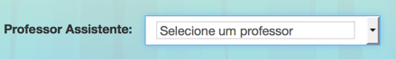
IMPORTANTE: só aparecerão nas opções os professores cadastrados com a permissão de professor assistente na sessão administrativa do curso.
Como adicionar estudantes a uma turma
Na página de gestão da turma escolhida, que pode ser acessada através da lista de turmas de cada curso, é possível adicionar alunos por meio do botão ADICIONAR USUÁRIO.
Aparecerá um modal no qual você deve inserir a lista de alunos que farão parte da turma em questão. É necessário colocar um usuário por linha. Para confirmar, clique em ADICIONAR USUÁRIO.
Como enviar mensagens aos alunos
Dentro de cada curso, é possível você enviar mensagens aos alunos dentro da plataforma TIM Tec. Para isso:
- Após efetuar seu login, acesse a área da ADMINISTRAÇÃO.
- Acesse o curso em que está o aluno para quem deseja enviar uma mensagem.
-
Entre em alguma aula e clique no ícone referente à mensagem,
localizado à direita da página.
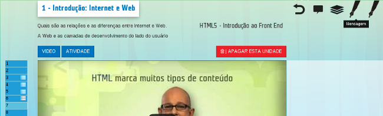
- Ná página de mensagem, clique em NOVA MENSAGEM para enviar uma mensagem.
- Selecione para qual aluno você deseja enviar a mensagem.
- Clique em Enviar.
É possível você enviar a mesma mensagem para mais de um aluno, selecionando os nomes na janela de mensagem, e para todos daquele curso, selecionando a opção Marcar todas.
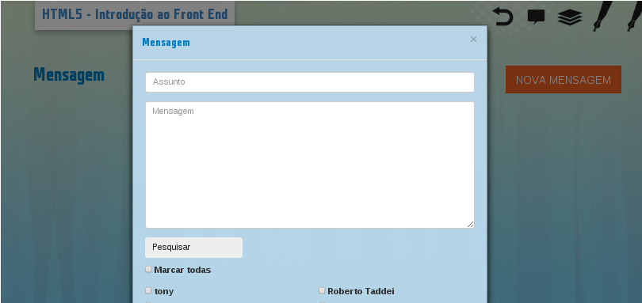
Como acessar as estatísticas dos cursos
Dentro de cada curso é possível verificar duas análises estatísticas, sendo uma sobre o progresso individual de cada aluno e outra sobre o progresso dos alunos por aula. Para isso:
- Após efetuar seu login, acesse a área da ADMINISTRAÇÃO.
- Acesse o curso sobre o qual deseja verificar o relatório das estatísticas.
-
Entre em alguma aula e clique no ícone referente aos relatórios,
localizado à direita da página.
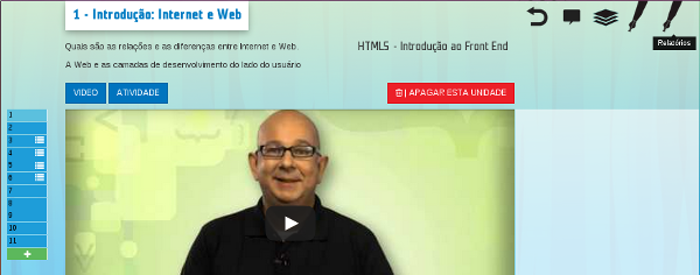
-
Na página de relatórios, você pode clicar sobre a
aba Estudantes para verificar o progresso
individual de cada aluno ou sobre a aba Aulas,
para verificar a média do progresso dos alunos por aula.
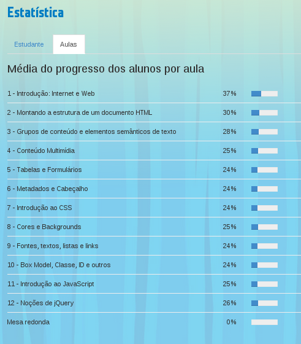